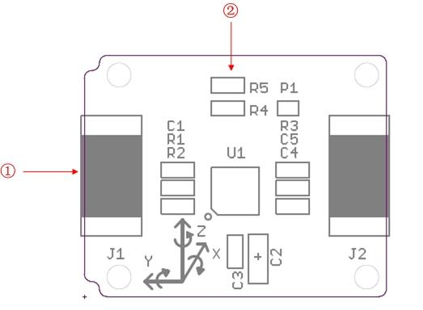
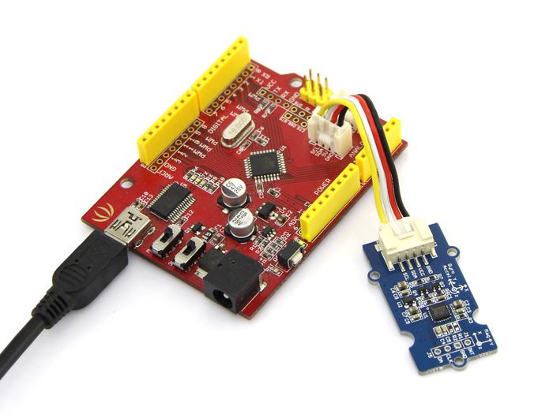
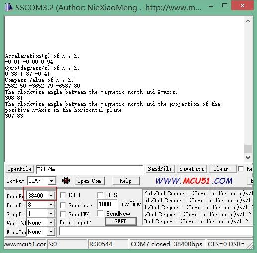
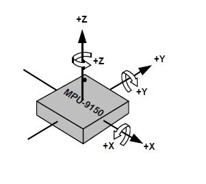

Xadow - IMU 9DOF
Xadow - IMU 9DOF is a high performance 9-axis motion tracking module,which is base on MPU-9150.The MPU-9150 is the world's first integrated 9-axis motion tracking device designed for the low power, low cost, and high performance requirements of consumer electronics equipment including smartphones, tablets and wearable sensors .MPU-9150 features three 16-bit ADC for digitizing the gyroscope outputs and three 16-bit ADCs for digitizing the accelerometer outputs and three 13-bit ADCs for digitizing the magnetometer outputs.
Specification
- I2C interface
- Low cost
- 400kHz Fast Mode I2C for communicating with all registers
- Digital-output X-, Y-, and Z-Axis angular rate sensors (gyroscopes) with a user-programmable full-scale range of ±250, ±500, ±1000, and ±2000°/sec
- Digital-output 3-Axis accelerometer with a programmable full scale range of ±2g, ±4g, ±8g and ±16g
- 3-axis silicon monolithic Hall-effect magnetic sensor with magnetic concentrator
Interface Function

- ①：12P FPC bottom contact
- ②：Address select resistor：R4,R5（default address is 0x68）
- Address is 0x68: R4 is not soldered.
- Address is 0x69: R5 is not soldered.
Usage
Based on library,we can display value of Accle&Gyro&Magnet on serial monitor.Now let's show how to use the module.
Hardware Installation
Hardware instration is very easy,It can connect to Xadow - Main Board by FPC cable.

Software Part
- 1) Download the library libraries.zip;
- 2) Unzip libraries into the libraries file of Arduino IDE by the path: ..\arduino-1.0.5\libraries.
- 3) Unzip IMU_9D0F_Demo file into the libraries file of Arduino IDE by the path: ..\arduino-1.0.5\libraries.
- 4) Open the code directly by the path: File -> Example -> IMU_9D0F_Demo
- 5) Upload the code. Note that you should select the correct board type and COM port.
- 6)You can see :

In static state，the z-Axis output value is about 0.98g，so you can refer to this to test if your sensor can work normally.
Orientation of Axes
The diagram below shows the orientation of the axes of sensitivity and the polarity of rotation.

Resource
Eagle File
PDF File
Datasheet
Copyright (c) 2008-2016 Seeed Development Limited (
www.seeedstudio.com /
www.seeed.cc)
This static html page was created from http://www.seeedstudio.com/wiki